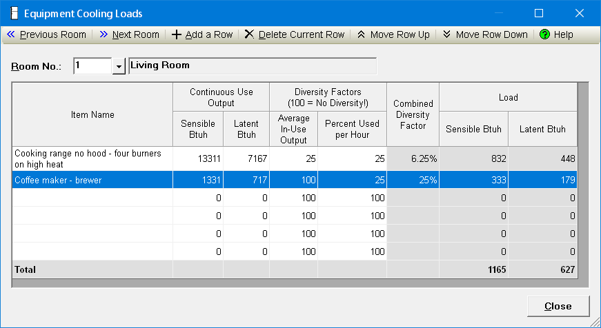

Equipment Cooling Loads Window |
  
|
Equipment Cooling Loads Window |
|
Click the button beside the "S.Eq" (sensible equipment cooling load) or "L.Eq" (latent equipment cooling load) inputs on the Room Data window to open the Equipment Loads window, shown below.

Overview
This window lets you select multiple items that produce internal cooling loads in each room. The total sensible load and total latent load (shown in the last two columns in the bottom row of the grid) will be shown on the Room Data window's "S.Eq" (sensible equipment) and "L.Eq" (latent equipment) inputs. You can click a cell in the Item Name column and then click the dropdown help button for that cell to select from a list of internal loads values from Manual J. All changes you make in this dialog are stored automatically as soon as you make them (there is no Cancel button, only a Close button). You can define as many items per room as you like.
If you type a number directly into the Room Data window's "S.Eq" or "L.Eq" inputs, then open this window afterwards, an item named "Miscellaneous Equipment" will be added to the list to account for your directly entered values.
Previous Room, Next Room: Changes to the previous or next room in the project. You can define the internal loads for as many rooms as you like before closing this dialog. Shortcut keys: Alt+P, Alt+N.
Add a Row: Adds a new row to the bottom of the list. Once you have used up all the blank rows you can use this function to add as many new rows as you like. Shortcut key: Alt+A.
Delete Current Row: Deletes the currently selected row from the project, and adjusts the Total if necessary. Shortcut key: Alt+D.
Move Row Up, Move Row Down: Moves the text of the current row up or down. These tools are only enabled when it is possible to move the current row as indicated.
Help: Opens this help window to this topic.
Room No.: Specifies the number of the current room. Since you can change to different rooms (except when this window is open from Drawing Board), this room number is not necessarily the same as the room being shown on the Room Data window.
Item Name: This column lets you specify the name of each item producing internal loads. When you click a cell in this column it displays a dropdown help button to the right of the cell, which you can click to select from a list of internal loads from Manual J. You may edit the list in the dropdown help if you like, by clicking the first item in the list. Note that the item name must not contain a semicolon or a comma. If the item you select has either of those two characters, or if you type either one directly into the input, the program will replace each instance with another character.
Continuous Use Output, Sensible Btuh: Specifies the maximum sensible gain in Btuh (or Watts for metric projects) that the current item produces when it operates continuously.
Continuous Use Output, Latent Btuh: Same as above for sensible, but for latent loads.
Average In-Use Output: Specifies the average in-use output of this item as a percentage. For example, if a cooking range with four equal burners averages only one burner on at a time you would enter 25.
Percent Used per Hour: Specifies the average percent used per hour for this item. For example, if a coffee maker averages operating about one quarter of the time, enter 25.
Combined Diversity Factor: Shows the product of the two diversity factors, described above. This value is the percentage of the continuous uses output that will be counted as a cooling load. If both diversity factors are set to 100, that means there is no diversification, and "None!" is shown in this cell to alert you to that fact.
Load, Sensible Btuh, Latent Btuh: These columns show the actual load that the current item produces. Equals the continuous load times the average in-use output times the percent used per hour.
Total: This row shows the sensible and latent load values that will be copied back to the Room Data window's "S.Eq" and "L.Eq" inputs.
Close: Closes this dialog. All changes you made on the dialog are saved automatically. Shortcut key: Alt+C.